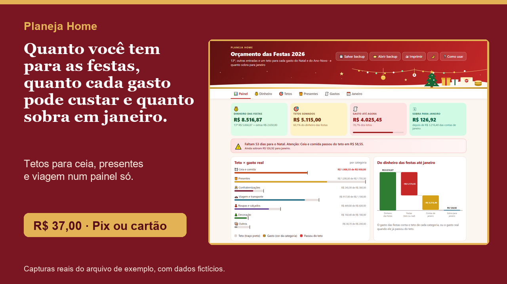
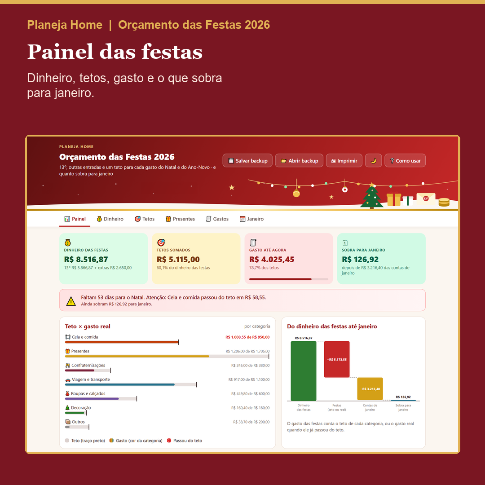
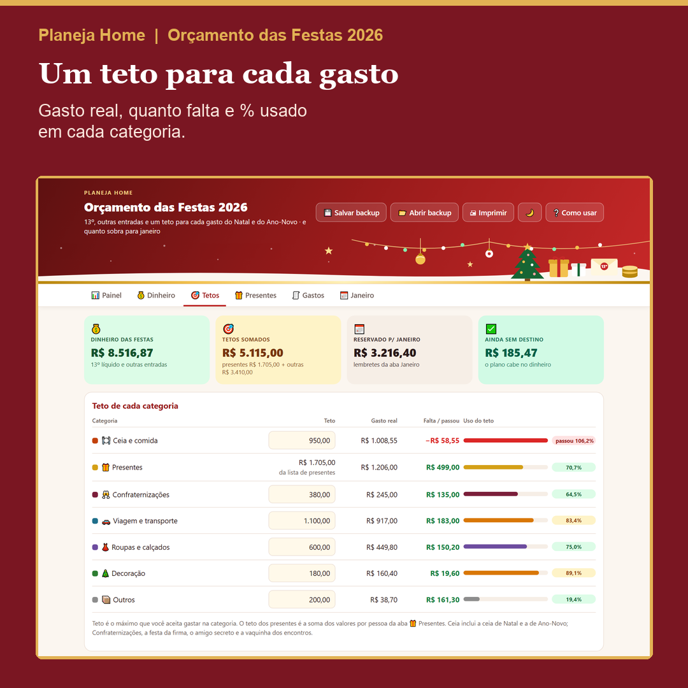
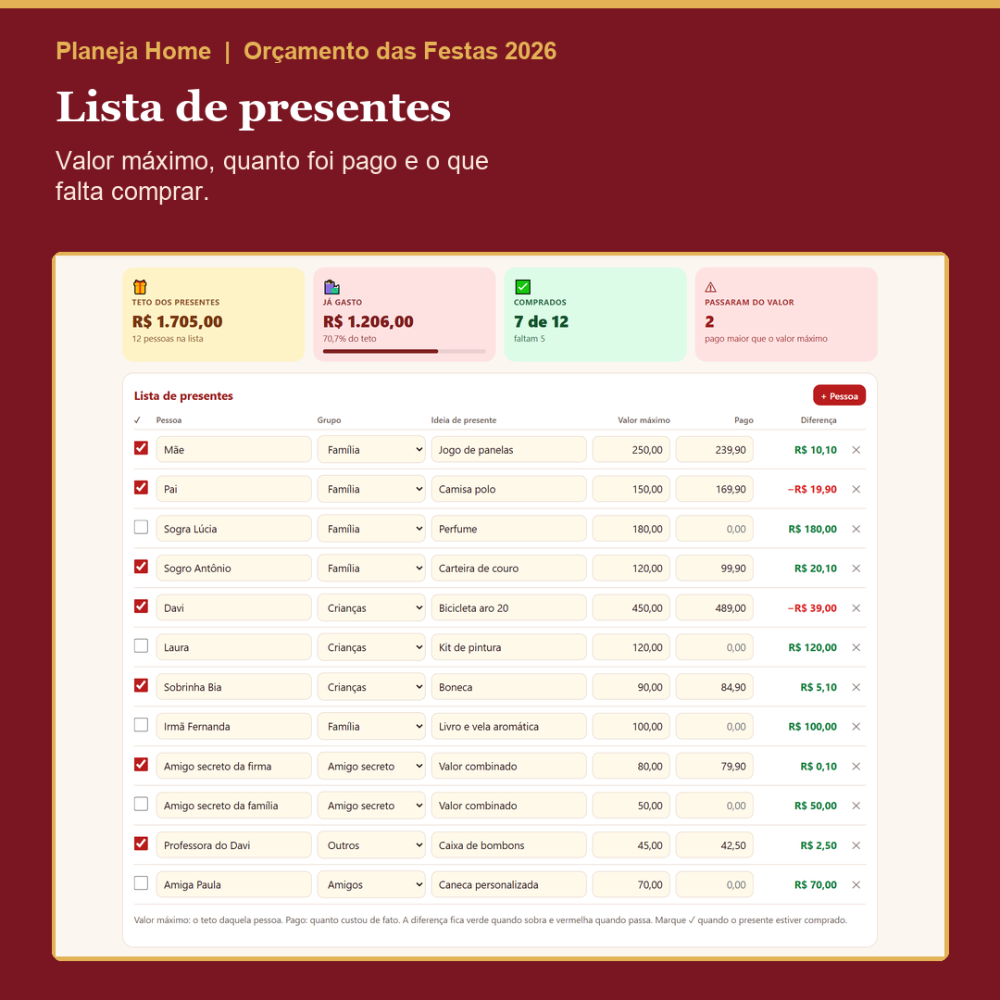
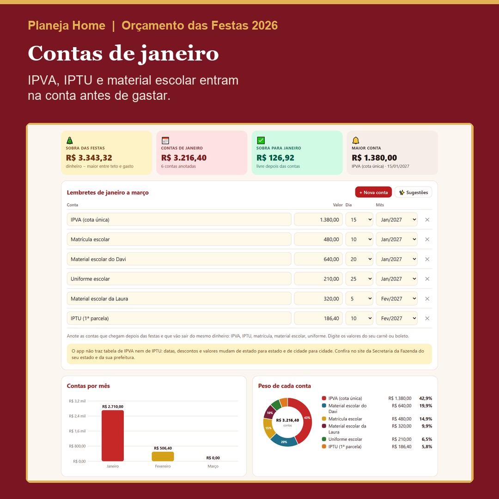
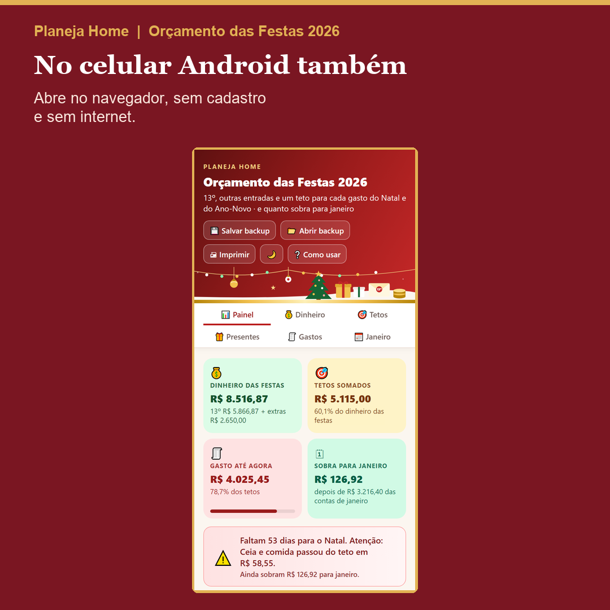

Planeja Home
Saiba quanto você tem para as festas, quanto cada gasto pode custar e quanto sobra para as contas de janeiro.
O Orçamento das Festas 2026 é um app que abre no navegador do computador ou do celular Android, sem internet e sem cadastro. Você coloca o 13º e o dinheiro das festas de um lado, dá um teto para cada gasto do Natal e do Ano-Novo e acompanha o gasto real contra cada teto.
Quero o Orçamento das Festas por R$ 37,00

O problema
A ceia sai mais cara que o previsto, o presente do sobrinho "não pode ficar de fora" e, quando janeiro chega com IPVA, IPTU e material escolar, o 13º já acabou. Sem um número para cada gasto, o Natal vai passando do limite sem ninguém perceber.
O que é
Você digita o 13º de cada pessoa (salário, meses e descontos) e o dinheiro que entra por fora, define um teto para cada categoria e monta a lista de presentes com um valor máximo por pessoa. A cada compra, lança o gasto. O painel mostra o que passou do teto, o que ainda cabe e quanto sobra depois das contas de janeiro.
O que vem
- App em branco, para a sua família, e app EXEMPLO, preenchido com uma família fictícia, para ver cada gráfico funcionando.
- Guia em PDF ilustrado, com 28 páginas e prints numerados.
- Painel com 4 cartões, aviso de quantos dias faltam para o Natal e gráficos de teto contra gasto e do dinheiro até janeiro.
- Dinheiro: 13º de cada pessoa com 1ª e 2ª parcela, mais outras entradas.
- Tetos por categoria: ceia e comida, confraternizações, viagem e transporte, roupas e calçados, decoração e outros.
- Presentes com valor máximo, valor pago e diferença; gastos lançados com data, categoria e filtro.
- Lembretes de contas de janeiro a março (IPVA, IPTU, matrícula, material e uniforme escolar), digitados por você.
- Backup em arquivo, impressão em A4 e modo escuro.





Capturas reais do arquivo de exemplo, com dados fictícios.
Para quem é
Famílias que querem saber, antes de gastar, quanto cabe nas festas; quem recebe 13º e precisa separar o dinheiro da ceia, dos presentes e das contas de janeiro.
Para quem não é
- Quem espera que o app calcule INSS, Imposto de Renda, IPVA ou IPTU: ele não traz tabela; você digita os valores do holerite e dos carnês.
- Quem quer cronograma da ceia ou sorteio de amigo secreto: o foco aqui é dinheiro e tetos.
- Quem quer sincronização na nuvem: os dados ficam no navegador do seu aparelho.
- Quem procura recomendação financeira: os números são estimativas feitas com o que você digita.
Como acessar
Depois da compra, baixe o .zip e o guia em PDF pelo e-mail ou pela área de membros da Kiwify. Extraia o .zip e abra o app com dois cliques (Chrome ou Edge). Abra o EXEMPLO para ver o painel funcionando e use o app em branco para a sua família. No iPhone/iPad, o arquivo abre só para consulta: para preencher, use um computador ou um celular Android, e leve os dados pelo backup.
Quanto custa
R$ 37,00
Pagamento único. Pix ou cartão (parcelas com juros do cartão, mostradas no checkout). Na hora da compra, você pode somar o Racha da Ceia (planilha em Excel para dividir a ceia entre as famílias) por R$ 17,00.
Garantia de 7 dias
Se não for o que você esperava ou o arquivo não abrir, peça o reembolso em até 7 dias pela Kiwify. Sem perguntas.
Perguntas frequentes
O que é, exatamente?
Um app que abre no navegador para planejar o dinheiro das festas: quanto você tem (13º e outras entradas), um teto para cada gasto do Natal e do Ano-Novo, o gasto real contra cada teto e quanto sobra para as contas de janeiro.
O que vem no pacote?
Um .zip com o app em branco (para a sua família) e o app EXEMPLO, preenchido com uma família fictícia, mais o guia em PDF ilustrado, de 28 páginas.
O app calcula o meu 13º?
Faz uma estimativa a partir do salário, dos meses trabalhados e do percentual de descontos que você digita. Ele não traz tabela de INSS nem de Imposto de Renda: o valor certo está no holerite.
Ele calcula o IPVA e o IPTU?
Não. Na aba Janeiro você anota cada conta com o valor do carnê ou do boleto. Datas e valores variam por estado e município. O botão Sugestões só traz os nomes das contas comuns, com valor zero.
Como funciona o teto de cada categoria?
Você define quanto aceita gastar em ceia e comida, confraternizações, viagem e transporte, roupas e calçados, decoração e outros. O teto dos presentes é a soma dos valores máximos da lista de presentes. O painel mostra o gasto, quanto falta e o percentual usado.
O que acontece se eu passar do teto?
A categoria fica em vermelho e o painel mostra quanto passou. O app avisa, mas não impede nenhum gasto.
Preciso de internet, de Excel ou de cadastro?
Não. Funciona offline, sem Excel, sem conta e sem instalação.
Funciona no celular?
Funciona no navegador do computador e do celular Android. No iPhone/iPad, o arquivo abre só para consulta: para preencher, use um computador ou um celular Android, e leve os dados pelo backup.
Meus dados ficam salvos onde?
No navegador do aparelho, sem enviar nada para a internet. Use "Salvar backup" de vez em quando e "Abrir backup" para recuperar ou levar para outro aparelho.
Posso usar mais de uma vez ou para outra festa?
Pode usar o app em branco quantas vezes quiser, na sua família. Para recomeçar, salve um backup e use "Apagar tudo e começar do zero".
Qual a diferença para o Orçamento Familiar 2027 e para o Kit Natal e Ceia?
Este app cuida só do dinheiro das festas, com um teto para cada gasto. O orçamento familiar acompanha o ano inteiro; o Kit Natal e Ceia cuida de quantidades, cronograma e amigo secreto.
O que é o Racha da Ceia que aparece na compra?
É uma planilha em Excel, vendida à parte por R$ 17,00, para dividir a ceia entre famílias: quem leva o quê, a parte de cada um e os Pix do acerto. Só entra no pedido se você marcar a oferta.
O app recomenda como investir ou gastar?
Não. Ele só organiza e soma os valores que você digita. Os números são estimativas e não são recomendação financeira nem garantia de resultado.
Como funciona a garantia?
7 dias a partir da compra. Peça o reembolso pela Kiwify ou responda o e-mail da compra; devolvemos sem perguntas.